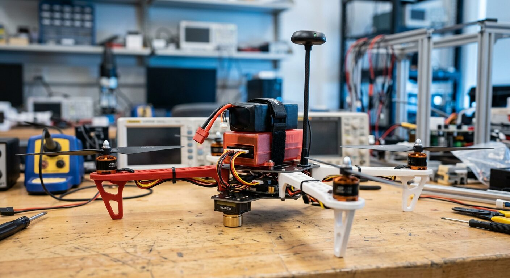

TestbedFlamewheel F450
A scaled-down drone for experimentation and testing
The small airframe carries the risk. It was used to validate the custom ROS nodes, prove out RTK performance in the air, and trial new versions of the flight stack before they ever touched the full payload. It also hosted feature evaluations such as RPM-based gyro filtering and system-model verification.
- Frame
- Flamewheel F450
- Motors
- DJI 2312E, 960 KV
- Propellers
- DJI 9450
- ESC
- APD 80A F-Series 80F3[X]
- Flight controller
- Pixhawk 2.1 CubeOrange
- GPS
- Drotek F9P RTK
- Sonar
- Maxbotix MB1242
- Radio
- FrSky X8R
- Telemetry
- 915 MHz SiK
- Battery
- 4S 4500 mAh Li-Po
- Payload
- ODROID XU4 single-board computer